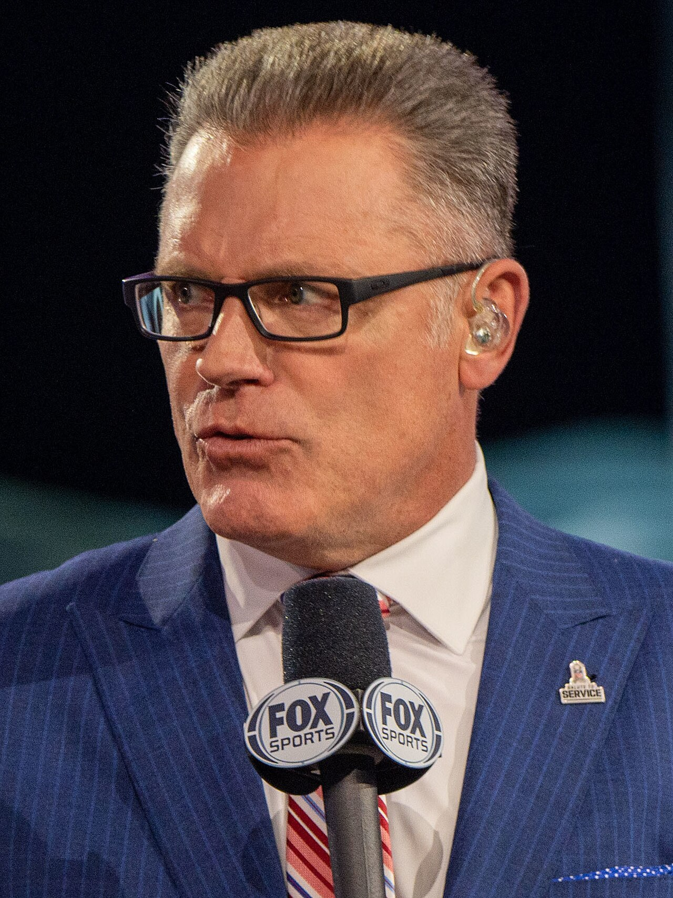

Howie Long
A Charlestown kid from little Villanova who started as an Oakland Raider, won a ring, and turned the rip move into a Hall of Fame career.
The Howie Long Story
Most people know Howie Long as the guy on Fox on Sunday mornings, or the guy in the movies. Raiders fans remember number 75 coming off the left side, ripping a tackle's hands away and landing on the quarterback. And the part a lot of people forget is where it started: in Oakland, as a raw second round pick nobody else was sure about.
He was born January 6, 1960, in Somerville, Massachusetts, and grew up in Charlestown, the tough, blue collar Boston neighborhood, raised mostly by his grandmother and uncles after his parents split when he was 12. He didn't play organized team sports until he was 15. He went to Milford High, then to Villanova, which was not exactly a football factory.
At Villanova he was a four year letterman who started as a tight end, moved to the defensive line, played nose guard and then end, and earned All East honors as a senior. He also boxed, and he won the Northern Collegiate heavyweight championship. Scouts mostly ignored him until he was named MVP of the 1980 Blue Gray Game.
The Raiders took him in the second round of the 1981 draft, 48th overall, and a lot of people thought it was a reach. Defensive line coach Earl Leggett was the one who pushed Al Davis to take him. Leggett later said Long probably would have still been there in the third round, because nobody else was really after him. Long joined a team that had just won Super Bowl XV, and he spent his rookie year in Oakland, picking up 7.5 sacks before sacks were even an official stat.
He walked into that locker room feeling like he didn't deserve the silver and black. He learned from Art Shell and Gene Upshaw, and he learned the standard: excellence was the benchmark, and anything short of it was unacceptable. Then the team moved to Los Angeles in 1982, and in the fifth game of that strike shortened year he became a starter.
In 1983 he broke out. He had a career high 13 sacks, five of them in one game at Washington, and he made his first Pro Bowl. That January the Raiders met the same Redskins in Tampa in Super Bowl XVIII, and the Raiders crushed them 38 to 9. Long had five tackles from left end, and John Riggins and the famous Washington running game managed 90 yards on 32 carries.
He kept getting better. In 1984 he had 58 tackles and 12 sacks and was named NFL Defensive Lineman of the Year by the NFL Alumni. In 1985 he had 10 sacks and shared the NEA's NFL Defensive Player of the Year award with Andre Tippett. He was first team All Pro three straight years, from 1983 to 1985, and made five straight Pro Bowls. He didn't miss a game to injury until midway through 1986, ending a streak of 81 straight games played.
His signature was the rip, a quick uppercut motion that broke a blocker's grip before the blocker knew what happened. He wasn't the biggest guy or the meanest guy. His linebacker Matt Millen said what made him different was that nobody else had his blend. He did everything.
Injuries cost him much of 1988, though he still got his first career interception that year and took it 73 yards against Houston. He made the Pro Bowl again in 1989, and then twice more in 1992 and 1993, his final season. When he retired after 1993 he was the last player on the team who had been a Raider before the move to Los Angeles. He finished with 84 official sacks plus those 7.5 from his Oakland rookie year, two interceptions and 10 fumble recoveries, and he was named to the NFL's 1980s All Decade Team.
He went into the Pro Football Hall of Fame in 2000, in a class with two guys every Bay Area fan knows, Joe Montana and Ronnie Lott. By then he was already in his second career as a studio analyst on Fox's NFL pregame show, a job he started in 1994, and he won a Sports Emmy in 1996. He also starred in Firestorm, played a part in Broken Arrow with John Travolta, and showed up in 3000 Miles to Graceland.
The football runs in the family too. He married Diane Addonizio, whom he met as a Villanova freshman, and their son Chris became a defensive end who won two Super Bowls of his own. Their son Kyle played guard in the NFL, and Howie Jr. went to work in the Raiders' player personnel department.
What He Meant to Us
Here's the part I always point out when somebody calls Howie Long an L.A. guy: he was drafted by the Oakland Raiders, he played his rookie year at the Coliseum, and he picked up 7.5 sacks here before anybody was even counting them officially. When he retired, he was the last one left on the roster from the Oakland days.
The rip move was the thing. You'd watch a tackle set up perfectly and then Long would just knock his hands off like they weren't there, and the quarterback was on the ground. Thirteen sacks in 1983, five in one game against Washington, then a ring against the same team in Tampa.
It's funny that a generation of fans only knows him from Fox, sitting next to Terry Bradshaw. Fine. But for 13 years he was one of the best defensive linemen in football, and it started right here.
Why He Was Clutch
Long's biggest stage was Super Bowl XVIII, and he owned it. Washington had the best running game in football with John Riggins, and the Raiders held them to 90 yards on 32 carries in a 38 to 9 rout. Long, at left end, beat his man all day and finished with five tackles.
He was the engine of one of the great pass rushes of the decade. From 1983 to 1986 the Raiders recorded 249 sacks, tied with the Chicago Bears for the most in the league over that span. Teams built protections to slow down number 75, and he still put up 13, 12 and 10 sacks in three straight years.
And he showed up every week. Eighty one straight games before an injury finally sat him in 1986, eight Pro Bowls over a 13 year career, and Pro Bowl seasons in his final two years. He never got satisfied, either. He said he never allowed himself the luxury of enjoying a particular game or season.
Clutch Moments
- 1981 season
The rookie in Oakland
A second round pick out of Villanova that a lot of people called a reach, Long played all 16 games as a rookie in Oakland in 1981, the season after the Raiders won Super Bowl XV. He picked up 7.5 sacks before the NFL made sacks an official statistic. It was the franchise's last season in Oakland before the move to Los Angeles.
- October 2, 1983
Five sacks at RFK
In a Week 5 heavyweight fight at RFK Stadium against the defending champion Redskins, Long sacked the quarterback five times, a career high. The Raiders lost a wild one 37 to 35, but they'd see Washington again in January.
- January 22, 1984
Super Bowl XVIII
In Tampa, the Raiders took apart Washington 38 to 9. Long, at left defensive end, outplayed tackle George Starke and finished with five tackles, and the Redskins' vaunted running game led by John Riggins was held to 90 yards on 32 carries. It capped a 13 sack season and his first Pro Bowl year.
- 1985 season
Defensive Player of the Year
Long had 10 sacks, getting at least one in eight different games, and was named first team All Pro for the third straight year. He shared the NEA's NFL Defensive Player of the Year award with New England's Andre Tippett, and his own teammates picked him as their defensive lineman of the year.
- 1988 season
Seventy three yards the other way
An injury cost him much of the 1988 season, but in a game against the Houston Oilers he intercepted the first pass of his career and returned it 73 yards. He still finished the year with three sacks.
- 2000
Canton, with Montana and Lott
Long was inducted into the Pro Football Hall of Fame in 2000, in the same class as Joe Montana, Ronnie Lott, Dave Wilcox and Steelers owner Dan Rooney. The kid who'd felt unworthy of the silver and black the first time he walked into the Raiders' locker room went in as one of the best defensive linemen of his era.
The Highlights
What They Said About Long
“I think there was a possibility he still would have been around in the third round,”
“He built me from the ground up to be a complete football player,”
“But none of them puts it together the way he does. Nobody has his blend. He does everything.”
“I was never happy with my play. I never allowed myself the luxury of enjoying a particular game or particular season.”
“When you are around those types of players, it allows you in the back of your mind to dream a little bit of someday being mentioned in the same breath with them,”
Career Stats
| Year | Team | G | GS | Sk | Int | FR | Honors |
|---|---|---|---|---|---|---|---|
| 1981 | OAK | 16 | 0 | 7.5 | 0 | 0 | |
| 1982 | RAI | 9 | 5 | 5.5 | 0 | 0 | |
| 1983 | RAI | 16 | 16 | 13.0 | 0 | 2 | Pro Bowl, AP 2nd team |
| 1984 | RAI | 16 | 16 | 12.0 | 0 | 2 | Pro Bowl, AP 1st team |
| 1985 | RAI | 16 | 16 | 10.0 | 0 | 0 | Pro Bowl, AP 1st team |
| 1986 | RAI | 13 | 12 | 7.5 | 0 | 2 | Pro Bowl |
| 1987 | RAI | 14 | 14 | 4.0 | 0 | 2 | Pro Bowl |
| 1988 | RAI | 7 | 6 | 3.0 | 1 | 0 | |
| 1989 | RAI | 14 | 10 | 5.0 | 0 | 1 | Pro Bowl |
| 1990 | RAI | 12 | 11 | 6.0 | 0 | 1 | |
| 1991 | RAI | 14 | 13 | 3.0 | 1 | 0 | |
| 1992 | RAI | 16 | 16 | 9.0 | 0 | 0 | Pro Bowl |
| 1993 | RAI | 16 | 16 | 6.0 | 0 | 0 | Pro Bowl |
| Career | 179 | 151 | 91.5 | 2 | 10 |
Regular season. OAK is the 1981 Oakland season; RAI is the Los Angeles Raiders, 1982 to 1993. Sacks became an official NFL statistic in 1982, so his 7.5 in 1981 are unofficial and his official career total is 84. FR is fumble recoveries; he also forced 15 fumbles. AP put him on its second team in 1983, but he is credited with first team All Pro honors from 1983 to 1985. 1982 was shortened by the players' strike. Scroll the table sideways on a phone.
Postseason
| Year | Team | G | GS | Sk |
|---|---|---|---|---|
| 1982 | RAI | 2 | 2 | 2.0 |
| 1983 | RAI | 3 | 3 | 0.0 |
| 1984 | RAI | 1 | 1 | 0.0 |
| 1985 | RAI | 1 | 1 | 0.0 |
| 1990 | RAI | 2 | 2 | 1.0 |
| 1991 | RAI | 1 | 1 | 0.0 |
| 1993 | RAI | 2 | 2 | 1.0 |
| Career | 12 | 12 | 4.0 |
Howie Long: Fast Facts
What years was Howie Long with the Oakland and Los Angeles Raiders?
Howie Long was with the Oakland and Los Angeles Raiders from 1981 to 1993 as a defensive end.
What number did Howie Long wear?
Howie Long wore number 75.
What are Howie Long's signature numbers?
91.5 career sacks, including 7.5 unofficial as an Oakland rookie; 8 pro Bowl selections; 13 sacks in 1983, his career high; XVIII super Bowl champion, 38 to 9 over Washington.
What were Howie Long's biggest honors?
Super Bowl XVIII champion; NEA NFL co Defensive Player of the Year (1985); 3x first team All Pro (1983 to 1985), 2x second team All Pro (1986, 1989); 8x Pro Bowl (1983 to 1987, 1989, 1992, 1993); NFL 1980s All Decade Team.
What are some of Long's biggest moments?
The rookie in Oakland (1981 season); Five sacks at RFK (October 2, 1983); Super Bowl XVIII (January 22, 1984). Every one is in the Clutch Moments section above.